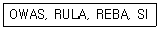
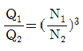
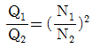
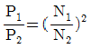
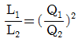
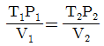
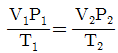
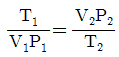
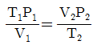

산업위생관리산업기사 (2012-03-04 기출문제)
1과목: 산업위생학 개론
1. 구리(Cu) 독성에 관한 인체 실험 결과 안전흡수량이 체중kg당 0.1mg이었다. 1일 8시간 작업시 구리의 체내흡수를 안전흡수량 이하로 유지하려면 공기 중 구리농도는 약 얼마 이하이어야 하는가? (단, 성인근로자의 평균 체중은 75kg, 작업시 폐환기율은 1.2m3/h, 체내잔류율은 1.0이다.)
- 0.61mg/m3
- 0.73mg/m3
- 0.78mg/m3
- 0.85mg/m3
(정답률: 65%)

2. 다음 중 NIOSH에서 권장하는 중량을 취급 작업시 감시기준(Action Limit)이 20kg일 때 최대허용 기준(MPL)은 몇 kg인가?
- 25
- 30
- 40
- 60
(정답률: 93%)
3. 산업위생의 정의 중 주요 활동 4가지에 해당하지 않는 것은?
- 예측
- 측정
- 평가
- 기여
(정답률: 97%)
4. 다음 중 물질안전보건자료(MSDS)에 포함되어야 하는 항목이 아닌 것은? (단, 그 밖의 참고사항은 제외한다.)
- 응급조치요령
- 물리화학적 특성
- 운송에 필요한 정보
- 최초 작성일자
(정답률: 67%)
5. 다음 중 생리적 기능검사에 해당되지 않는 것은?
- 감각기능검사
- 심폐기능검사
- 체력검사
- 지각동작검사
(정답률: 88%)
6. 우리나라에서 산업위생관리를 관장하는 정부 행정부처는?
- 환경부
- 고용노동부
- 보건복지부
- 행정안전부
(정답률: 79%)
7. 다음 중 산업피로를 측정할 때 국소피로를 평가하는 객관적인 방법은?
- 심전도
- 근전도
- 부정맥지수
- 작업종료 후 회복시의 심박수
(정답률: 74%)
8. 다음 중 노출기준(TWA, ppm)이 가장 낮은 것은?
- 오존(O3)
- 암모니아(NH2)
- 일산화탄소(CO)
- 이산화탄소(CO2)
(정답률: 65%)
9. 다음 중 생물학적 원인에 의한 직업성 질환을 유발하는 직종으로 볼 수 없는 것은?
- 제지제조
- 농부
- 수의사
- 피혁제조
(정답률: 45%)
10. 미국산업위생학술원(AAIH)에서는 산업위생분야에 종사하는 사람들이 반드시 지켜야 할 윤리강령을 채택하였는데 다음 중 해당하지 않는 것은?
- 전문가로서의 책임
- 근로자에 대한 책임
- 검사기관으로서의 책임
- 일반 대중에 대한 책임
(정답률: 80%)
11. 다음 약어의 용어들은 무엇을 평가하는데 사용되는가?

- 작업장 국소 및 전체환기효율 비교
- 직무 스트렝스 정도
- 누적외상성 질환의 위험요인
- 작업강도의 정량적 분석
(정답률: 83%)
12. 다음 중 작업대사율(RMR)에 관한 설명으로 옳은 것은?
- 기초대사량을 작업대사량으로 나눈 값이다.
- 작업에 소모된 열량에서 기초대사량을 나눈 값이다.
- 작업에 소모된 열량에서 안정시의 열량을 나눈 값이다.
- 작업에 소모된 열량에서 안정시의 열량을 뺀 값에서 기초대사량을 나눈 값이다.
(정답률: 78%)
13. 다음 중 NIOSH의 권고중량물한계기준(RWL:Recommended Weight Limit)을 산정할 때 고려되는 인자가 아닌 것은?
- 수평계수
- 수직계수
- 작업강도계수
- 비대칭계수
(정답률: 69%)
14. 다음 중 도수율에 관한 설명으로 틀린 것은?
- 산업재해의 발생빈도를 나타낸다.
- 재해의 경중, 즉 강도를 나타내는 척도이다.
- 연 근로시간 합계 100만 시간당의 발생건수를 나타낸다.
- 연 근로시간수의 정확한 산출이 곤란한 경우 연간 2400시간으로 한다.
(정답률: 72%)
15. 다음 중 교대근무의 운용 방법으로 가장 적절한 것은?
- 신체의 적응을 위하여 야간근무는 5~7일 연속하여 실시한다.
- 야간근무 후 다음 반으로 가는 간격은 최소 48시간 이상을 가지도록 하여야 한다.
- 근무의 연속성을 고려하여 가능한 한 3조 3교대로 한다.
- 교대 방식은 피로의 회복을 위하여 정교대 보다 역교대 방식으로 한다.
(정답률: 77%)
16. 다음 중 산업안전보건법상 보건관리자의 자격기준에 해당 하지 않는 자는?
- “의료법”에 의한 의사
- “의료법”에 의한 간호사
- “위생사에 관한 법률”에 의한 위생사
- “고등교육법”에 의한 전문대학에서 산업보건 관련 학과를 졸업한 자
(정답률: 87%)
17. 다음 중 피로에 관한 설명으로 틀린 것은?
- 피로의 자각증상은 피로의 정도와 반드시 일치하지 않는다.
- 산업피로는 주로 작업강도와 양, 속도, 작업시간 등 외부적 요인에 의해서만 좌우된다.
- 피로는 그 정도에 따라 보통피로, 과로, 곤비 상태로 나눌 수 있다.
- 피로의 본태는 에너지원의 소모, 피로물질의 체내축적, 신체조절 기능의 저하 등에서 기인한다.
(정답률: 75%)
18. 다음 중 육체적 근육 노동시 특히 주의하여 보급해야 할 비타민의 종류는?
- 비타민 B1
- 비타민 B2
- 비타민 B6
- 비타민 B12
(정답률: 88%)
19. 화학적 유해인자에 대한 노출을 평가하는 방법은 크게 개인시료와 생물학적 모니터링(biological monitoring)이 있는데 다음 중 생물학적 모니터링에 이용되는 시료로 볼 수 없는 것은?
- 소변
- 유해인자의 노출량
- 혈액
- 인체 조직이나 세포
(정답률: 69%)
20. 다음 중 산업안전보건법상 보관하여야 할 서류와 그 보존 기간이 잘못 연결된 것은?
- 건강진단 결과를 증명하는 서류 : 5년간
- 작업환경측정 결과를 기록한 서류 : 3년간
- 보건관리 업무 대행에 관한 서류 : 3년간
- 발암성 확인물질을 취급하는 근로자에 대한 건강진단 결과의 서류 : 30년간
(정답률: 63%)
2과목: 작업환경측정 및 평가
21. Nucleopore 여과지에 관한 설명으로 옳지 않은 것은?
- 플리카보네이트로 만들어진다.
- 강도는 우수하나 화학물질과 열에는 불안정하다.
- 구조가 막여과지처럼 여과지 구멍이 겹치는 것이 아니고 체(sieve)처럼 구멍이 일직선으로 되어 있다.
- TEM 분석을위한 석면의 채취에 이용된다.
(정답률: 46%)
22. 벤젠(C6H6)을 0.2L/min 유량으로 2시간 동안 채취하여 GC로 분석한 결과 10mg 이었다. 공기 중 농도는 몇 ppm인가? (단, 25℃, 1기압 기준)
- 약 75ppm
- 약 96ppm
- 약 118ppm
- 약 131ppm
(정답률: 50%)
23. 공기 흡입유량, 측정시간, 회수율 및 시료분석 등에 의한 오차가 각각 10%, 5%, 11% 및 4%일 때의 누적오차는?
- 11.8%
- 18.4%
- 16.2%
- 22.6%
(정답률: 89%)
24. 40%(W/V%) NaOH 용액의 농도는 몇 N 인가? (단, Na 원자량은 23)
- 5.0N
- 10.0N
- 15.0N
- 20.0N
(정답률: 46%)
25. 어느 오염원에서 perchloroethylene 20% (TLV : 670mg/m3, 1mg/m3=0.15ppm), methylene chloride 30% (TLV : 720mg/m3, 1mg/m3=0.28ppm), heptane 50% (TLV : 1600mg/m3, 1mg/m3=0.25ppm)의 중량비로 조성된 용제가 증발되어 작업환경을 오염시켰을 경우 혼합물의 허용농도는?
- 673mg/m3
- 794mg/m3
- 881mg/m3
- 973mg/m3
(정답률: 72%)
26. 흡착제 중 실리카겔이 활성탄에 비해 갖는 장단점으로 옳지 않은 것은?
- 활성탄에 비해 수분을 잘 흡수하여 습도에 민감하다.
- 매우 유독한 이황화탄소를 탈착용매로 사용하지 않는다.
- 활성탄에 비해 아닐린, 오르쏘-톨루이딘 등의 아민류의 채취가 어렵다.
- 추출액이 화학분석이나 기기분석에 방해물질로 작용하는 경우가 많지 않다.
(정답률: 52%)
27. 표준가스에 관한 법칙 중 일정한 부피조건에서 압력과 온도가 비례한다는 것을 나타내는 것은?
- 게이-루삭의 법칙
- 라울트의 법칙
- 보일의 법칙
- 하인리히의 법칙
(정답률: 83%)
28. 고유량 공기 채취펌프를 수동 무마찰 거품관으로 보정하였다. 비누 방울이 450cm3의 부피(V)까지 통과하는데 12.6초(T) 걸렸다면 유량(Q)는 몇 L/min인가?
- 2.1L/min
- 3.2L/min
- 7.8L/min
- 32.3L/min
(정답률: 50%)
29. 옥외(태양광선이 내리쬐는 장소)에서 WBGT(습구흑구온도지수, ℃)를 산출하는 공식은? (단, Tnwb = 자연습구온도, Tg = 흑구온도, Tdb = 건구온도)
- WBGT = 0.7 Tnwb + 0.3 Tdb
- WBGT = 0.7 Tnwb + 0.3 Tg
- WBGT = 0.7 Tnwb + 0.2 Tdb + 0.1 Tg
- WBGT = 0.7 Tnwb + 0.2 Tg + 0.1 Tdb
(정답률: 70%)
30. 포름알데히드(CH2O) 15g은 몇 mmole인가?
- 0.5
- 15
- 200
- 500
(정답률: 22%)
31. 가스상 물질의 순간시료채취에 사용되는 기구로 가장 거리가 먼 것은?
- 진공플라스크
- 미젯 임핀저
- 플라스틱백
- 검지관
(정답률: 75%)
32. 알고 있는 공기중 농도 만드는 방법인 Dynamic Method에 관한 설명으로 옳지 않은 것은?
- 희석공기와 오염물질을 연속적으로 흘려주어 연속적으로 일정한 농도를 유지하면서 만드는 방법이다.
- 다양한 농도 범위의 제조가 가능하다.
- 소량의 누출이나 벽면에 의한 손실은 무시할 수 있다.
- 만들기가 간단하고 가격이 저렴하다.
(정답률: 82%)
33. 정량한계(LOQ)에 관한 내용으로 옳은 것은?
- 표준편차의 3배
- 표준편차의 10배
- 검출한계의 5배
- 검출한계의 10배
(정답률: 71%)
34. 불꽃방식의 원자흡광광도계의 일반적인 장단점으로 옳지 않은 것은?
- 가격이 흑연로장치에 비하여 저렴하다.
- 분석시간이 흑연로장치에 비하여 길게 소요된다.
- 시료량이 많이 소요되며 감도가 낮다.
- 고체시료의 경우 전처리에 의하여 매트릭스를 제거하여야 한다.
(정답률: 58%)
35. 원자흡광분석기에서 빛의 강도가 lo인 단색광이 어떤 시료 용약을 통과할 때 그 빛의 85%가 흡수될 경우 흡광도는?
- 0.64
- 0.76
- 0.82
- 0.91
(정답률: 77%)
36. “1차 표준”에 관한 설명으로 옳지 않은 것은?
- Wet-test meter(용량측정용)는 용량측정을 위한 1차 표준으로 2차 표준용량 보정에 사용된다.
- 폐활량계는 과거에 폐활량을 측정하는데 사용되었으나 오늘날 1차 용량표준으로 자주 사용된다.
- 펌프의 유량을 보정하는데 1차 표준으로 비누거품 미터가 널리 사용된다.
- 물리적 크기에 의해서 공간의 부피를 직접 측정할 수 있는 기구를 말한다.
(정답률: 89%)
37. 어떤 공장의 진동을 측정한 결과 측정대상 진동의 가속도 실효차가 0.03198m/sec2이었다. 이 때 진동가속도 레벨(VAL)은? (단, 주파수 : 18Hz, 정현진동 기준)
- 65dB
- 70dB
- 75dB
- 80dB
(정답률: 37%)
38. 흡착제 중 다공성 중합체에 관한 설명으로 옳지 않은 것은?
- 활성탄보다 비표면적이 작다.
- 활성탄보다 흡착용량이 크며 반응성도 높다.
- 테낙스 GC(Tenax GC)는 열안정성이 높아 열탈착에 의한 분석이 가능하다.
- 특별한 물질에 대한 선택성이 좋다.
(정답률: 47%)
39. 부탄을 용액(흡수액)을 이용하여 시료를 채취한 후 분석된 시료량이 75㎍이며, 공시료에 분석된 평균시료량이 0.5㎍, 공기채취량은 10L, 탈착효율이 92.5%일 때 이 가스상 물질의 농도는?
- 8.1 ㎎/m3
- 10.4 ㎎/m3
- 12.2 ㎎/m3
- 14.8 ㎎/m3
(정답률: 42%)
40. pH 2, pH 5인 두 수용액을 수산화나트륨으로 각각 중화시킬 때 중화제 NaOH의 투입량은 어떻게 되는가?
- pH 5 인 경우 보다 pH 2가 3배 더 소모된다.
- pH 5 인 경우 보다 pH 2가 9배 더 소모된다.
- pH 5 인 경우 보다 pH 2가 30배 더 소모된다.
- pH 5 인 경우 보다 pH 2가 1000배 더 소모된다.
(정답률: 63%)
3과목: 작업환경관리
41. 질소의 마취작용에 관한 설명으로 옳지 않은 것은?
- 예방으로는 질소대신 마취현상이 적은 수소 또는 헬륨 같은 불활성 기체들로 대치한다.
- 대기압 조건으로 복귀 후에도 대뇌 장해 등 후유증이 발생된다.
- 수심 90~120m에서 환청, 환시, 주울증, 기억력 감퇴 등이 나타난다.
- 질소가스는 정상기압에서는 비활성이지만 4기압 이상에서는 마취작용을 나타낸다.
(정답률: 59%)
42. 유해성이 적은 재료의 대치에 관한 설명으로 옳지 않은 것은?
- 아조염료 합성원료를 벤젠 대신 벤지딘으로 대치한다.
- 분체의 원료는 입자가 큰 것으로 대치한다.
- 야광시계의 자판을 라듐 대신 인을 사용한다.
- 금속제품의 탈지(脫指)에 트리클로로에틸렌을 사용하던 것을 계면활성제로 대치한다.
(정답률: 70%)
43. 작업장에서 발생된 분진에 대한 작업환경관리 대책과 가장 거리가 먼 것은?
- 국소박이 장치의 설치
- 발생원의 밀폐
- 방독마스크의 지급 및 착용
- 전체환기
(정답률: 83%)
44. 고온다습한 환경에 노출될 때 체온조절중추 특히 발한중추의 장해로 인하여 발생하는 건강장해는?
- 열경련
- 열사병
- 열쇠약
- 열피로
(정답률: 73%)
45. 전리방사선인 β입자에 관한 설명으로 옳지 않은 것은?
- 외부조사도 잠재적 위험이 되나 내부 조사가 더욱 큰 건강상의 문제를 일으킨다.
- 선원은 방사선 원자핵이며 형태는 고속의 전자(입자)이다.
- α(알파)입자에 비해서 무겁고 속도가 느리다.
- RBE는 1 이다.
(정답률: 56%)
46. 자외선에 관한 설명으로 옳지 않은 것은?
- 인체에 유익한 건강선은 290~315nm 정도이다.
- 구름이나 눈에 반사되지 않아 대기오염의 지표로도 사용된다.
- 일명 화학선이라고 하며 광화학반응으로 단백질과 핵산분자의 파괴, 변성작용을 한다.
- 피부암은 주로 UV-B에 영향을 받는다.
(정답률: 71%)
47. 소음을 측정한 결과 dB(A)의 값과 dB(C)의 값이 서로 별 차이가 없을 때 이 소음의 특성은?
- 100Hz 이하의 저주파이다.
- 500Hz 정도의 중·저주파이다.
- 100~500Hz 범위의 저주파이다.
- 1000Hz 이상의 고주파이다.
(정답률: 48%)
48. 1 foot candle의 정의는?
- 1루멘의 빛이 1ft2의 평면상에 수직방향으로 비칠 때 그 평면의 밝기
- 1루멘의 빛이 1cm2의 평면상에 수직방향으로 비칠 때 그 평면의 밝기
- 1루멘의 빛이 1m2의 평면상에 수직방향으로 비칠 때 그 평면의 밝기
- 1루멘의 빛이 1in2의 평면상에 수직방향으로 비칠 때 그 평면의 밝기
(정답률: 70%)
49. 지적온도에 미치는 인자에 관한 설명으로 옳지 않은 것은?
- 작업량이 클수록 체열 생산량이 많아 지적온도가 높아진다.
- 여름철이 겨울철 보다 높다.
- 젊은 사람보다 노인들에게 지적온도가 높다.
- 더운 음식, 알코올 섭취시 지적온도는 낮아진다.
(정답률: 38%)
50. 할당보호계수(APF)가 25인 반면형 호흡기보호구를 구리흄(노출기준(허용농도) 0.3mg/m3)이 존재하는 작업장에서 사용한다면 최대사용농도(MUC:mg/m3)는?
- 3.5
- 5.5
- 7.5
- 9.5
(정답률: 68%)
51. 산업위생의 관리적 측면에서 대치 방법인 공정 또는 시설의 변경 내용으로 옳지 않은 것은?
- 가연성 물질을 저장할 경우 유리병보다는 철제 통을 사용
- 페인트 도장 시 분사 대신 담금 도장으로 변경
- 금속제품 이송 시 롤러의 재질을 철제에서 고무나 플라스틱을 사용
- 큰 날개 저속의 송풍기 대신 작은 날개 고속 회전하는 송풍기 사용
(정답률: 72%)
52. 용접방법과 조건은 흄과 가스발생에 영향을 준다. 아크 용접에서 용접흄 발생량을 증가시키는 원인으로 옳지 않은 것은?
- 봉 극성이 (-)극성인 경우
- 아크 전압이 낮은 경우
- 아크 길이가 긴 경우
- 토치의 경사각도가 큰 경우
(정답률: 75%)
53. 진동에 의한 국소장해인 레이노씨현상에 관한 설명과 가장 거리가 먼 것은?
- 압축공기를 이용한 진동공구를 사용하는 근로자들의 손가락에서 발생한다.
- 진동공구의 진동수가 4~12Hz 범위에서 발생되며 심한 경우 오한과 혈당치 변화가 초래된다.
- 손가락에 있는 말초혈관운동의 장해로 인해 손가락이 창백해지고 동통을 느낀다.
- 추위에 폭로되면 증상이 악화되며 dead finger 또는 white finger라고 부른다.
(정답률: 70%)
54. 다음 중 소음의 물리적 특성으로 옳지 않은 것은?
- 음의 높낮이는 음의 강도로 결정 된다.
- 건강한 사람의 가칭 주파수는 20~20000Hz이다.
- 같은 크기의 에너지를 가진 소리라도 주파수에 따라 크기를 다르게 느낀다.
- 회화음역은 250~3000Hz정도 이다.
(정답률: 50%)
55. 피조사체 1g에 대하여 100erg의 방사선에너지가 흡수되는 선량 단위의 약자를 나타낸 것은?
- R
- Ci
- rem
- rad
(정답률: 83%)
56. 진동방지대책 중 발생원 대책으로 가장 옳은 것은?
- 수진점 근방의 방진구
- 수진측의 탄성지지
- 기초중량의 부가 및 경감
- 거리감쇠
(정답률: 69%)
57. 귀덮개와 비교하여 귀마개에 대한 설명으로 옳지 않은 것은?
- 부피가 작아서 휴대하기가 편리하다.
- 좁은 장소에서 머리를 많이 움직이는 작업을 할 때 사용하기 편리하다.
- 제대로 착용하는데 시간이 적게 소요되며 용이하다.
- 일반적으로 차음효과는 떨어진다.
(정답률: 84%)
58. 귀 마개에 NRR = 30 이라고 적혀 잇었다면 이 귀마개의 차음 효과는? (단, 미국 OSHA의 산정 기준에 따름)
- 23.0 dB
- 15.0 dB
- 13.5 dB
- 11.5 dB
(정답률: 80%)
59. 소음의 흡음제 특성과 가장 거리가 먼 것은?
- 차음 재료로도 널리 사용된다.
- 음에너지를 소량의 열에너지로 변환시킨다.
- 잔향음의 에너지를 저감시킨다.
- 공기에 의하여 전파되는 음을 저감시킨다.
(정답률: 43%)
60. 방독마스크의 흡수제의 재질로 적당하지 않은 것은?
- fiber glass
- silicagel
- activated carbon
- sodalime
(정답률: 80%)
4과목: 산업환기
61. 24시간 가동되는 작업장에서 환기하여야 할 작업장 실내 체적은 3000m3이다. 환기시설에 의한 공급되는 공기의 유량이 4000m3/hr일 때 이 작업장에서의 일일 환기횟수는 얼마인가?
- 25회
- 32회
- 37회
- 43회
(정답률: 61%)
62. 톨루엔(분자량 92)의 증기 발생량은 시간당 300g이다. 실내의 평균 농도를 노출기준(50ppm)이하로 하려면 유효 환기량은 약 몇 m3/min인가? (단, 안전계수는 4이고, 공기의 온도는 21℃이다.)
- 83.83
- 104.78
- 5029.57
- 6286.96
(정답률: 57%)
63. 덕트에서 공기 흐름의 평균속도압이 25mmH2O였을 대 공기의 속도는 약 몇 m/s인가?
- 10.2
- 20.2
- 25.2
- 40.2
(정답률: 55%)
64. 다음 중 덕트의 설계에 관한 사항으로 적절하지 않은 것은?
- 다지관의 경우 덕트의 직경을 조절하거나 송풍량을 조절하여 전체적으로 균형이 맞도록 설계한다.
- 사각형 덕트가 원형 덕트보다 덕트 내 유속 분포가 균일하므로 가급적 사각형 덕트를 사용한다.
- 덕트의 직경, 조도, 단면 확대 또는 수축, 곡관수 및 모양 등을 고려하여야 한다.
- 정방형 덕트를 사용할 경우 원형 상당 직경을 구하여 설계에 이용한다.
(정답률: 85%)
65. 유입계수가 0.6인 플랜지 부착 원형후드가 있다. 덕트의 직경은 10cm이고, 필요 환기량이 20m3/min라고 할 때 후드 정압(SPh)은 약 몇 mmH2O인가?
- -110.2
- -236.4
- -306.4
- -448.2
(정답률: 52%)
66. 공기정화장치인 집진장치의 선정 및 설계에 영향을 미치는 인자로 거리가 먼 것은?
- 오염물질의 회수율
- 요구되는 집진효율
- 오염물질의 항진농도와 입경
- 처리가스의 흐름 특성과 용량 및 온도
(정답률: 60%)
67. 입자의 직경이 1㎛이고, 비중이 2.0인 입자의 침강 속도는 얼마인가?
- 0.003cm/s
- 0.006cm/s
- 0.01cm/s
- 0.03cm/s
(정답률: 75%)
68. 슬롯후드란 개구변의 폭(W)이 좁고, 길이(L)가 긴 것을 말하며 일반적으로 W/L 비가 몇 이하인 것을 말하는가?
- 0.1
- 0.2
- 0.3
- 0.4
(정답률: 57%)
69. 다음 중 덕트의 압력손실에 관한 설명으로 틀린 것은?
- 곡관의 반경비(반경/직경)가 클수록 압력손실은 증가한다.
- 합류관에서 합류각이 클수록 분지관의 압력손실은 증가한다.
- 확대관이나 축소관에서는 확대각이나 축소각이 클수록 압력손실은 증가한다.
- 비마개형 배기구에서 직경에 대한 높이의 비(높이/직경)가 작을수록 압력손실은 증가한다.
(정답률: 37%)
70. 송풍량이 증가해도 동력이 증가하지 않는 장점이 있어 한계부하 송풍기라고도 하는 원심력 송풍기는?
- 프로펠러 송풍기
- 전항 날개형 송풍기
- 후향 날개형 송풍기
- 방사 날개형 송풍기
(정답률: 74%)
71. 다음 중 여과집진장치의 입자 포집원리와 가장 거리가 먼 것은?
- 관성력
- 직접차단
- 원심력
- 확산
(정답률: 62%)
72. 덕트 내 단위체적인 유체에 모든 방향으로 동일하게 영향을 주는 압력으로 공기흐름에 대한 저항을 나타내는 압력은?
- 전압
- 속도압
- 정압
- 분압
(정답률: 69%)
73. 다음 중 송풍기의 상사법칙에서 회전수(N)와 송풍량(Q), 소요동력(L), 정압(P)과의 관계를 올바르게 나타낸 것은?




(정답률: 63%)
74. 후드의 열상승기류량이 10m3/min이고, 유도기류량이 15m3/min일 때 누입한계유량비(KL)는 얼마인가? (단, 기타 조건은 무시한다.)
- 0.67
- 1.5
- 2.0
- 2.5
(정답률: 57%)
75. 복합환기시설의 합류점에서 각 분지관의 정압차가 5~20%일 때 정압평형이 유지되도록 하는 방법으로 가장 적절한 것은?
- 압력손실이 적은 분지관의 유량을 증가시킨다.
- 압력손실이 적은 분지관의 직경을 작게 한다.
- 압력손실이 많은 분지관의 유량을 증가시킨다.
- 압력손실이 많은 분지관의 직경을 작게 한다.
(정답률: 40%)
76. 기압의 변화가 없는 상태에서 고열 작업장의 건구온도가 40℃라면 이 때 그 작업장내의 공기밀도(kg/m3)는 약 얼마인가? (단, 0℃, 1기압 공기밀도는 1.293kg/m3이다.)
- 1.⑤
- 1.13
- 1.16
- 1.20
(정답률: 57%)
77. 다음 중 자연환기에 관한 설명으로 틀린 것은?
- 기계 환기에 비해 소음이 적다.
- 외부의 대기조건에 상관없이 일정 수준의 환기효과를 유지할 수 있다.
- 실내외 온도차가 높을수록 환기 효율은 증가한다.
- 건물이 높을수록 환기 효율이 증가한다.
(정답률: 78%)
78. 다음 중 제어속도에 관한 설명으로 틀린 것은?
- 포집속도라고도 한다.
- 유해물질이 후드로 유입되는 최대 속도를 말한다.
- 제어속도는 유해물질의 발생조건과 공기의 난기류속도 등에 의해 결정된다.
- 같은 유해인자라도 후드의 모양과 방향에 따라 달라진다.
(정답률: 68%)
79. 다음 중 국소배기장치의 자체검사시에 갖추어야 할 필수 측정기구로 볼 수 없는 것은?
- 줄자
- 연기발생기
- 청음기
- 피토관
(정답률: 59%)
80. 다음 중 보일-샤를의 법칙으로 옳은 것은? (단, T는 절대온도, P는 압력, V는 공기의 부피이다.)




(정답률: 69%)